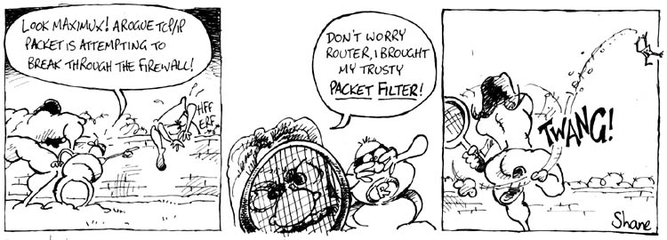

[The Help Dex cartoons were not available by the publishing deadline, and will return next month. Instead, let's look at some of Shane's other cartoons. This is from the series Maximux. Maximux is a superhero, of course, as Shane's protagonists frequently are. Maximux is like Hercules. And just like Batman has his sidekick Robin, Maximux has his Router. -Mike]
You can still see the latest HelpDex episodes on Linux Today.